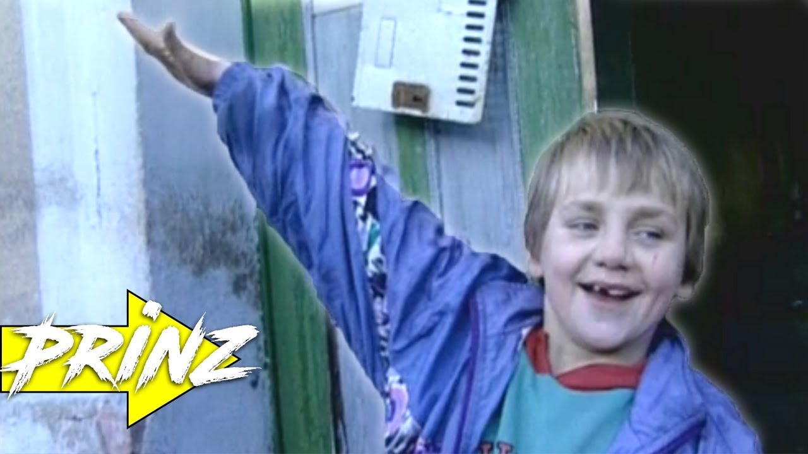

familie - Wikționar

familie
De la Wikționar, dicționarul liber Jump to navigation Jump to search Wikipedia are un articol desprefamilie Familia Dubufe
Cuprins
1 română 1.1 Etimologie 1.2 Pronunție 1.3 Substantiv 1.3.1 Sinonime 1.3.2 Cuvinte derivate 1.3.3 Cuvinte compuse 1.3.4 Cuvinte apropiate 1.3.5 Traduceri 1.4 Referințeromână
Etimologie
Din latină familia , prin intermediul franceză famille , confer dubletul femeie . Confer italiană famiglia .
Pronunție
AFI : /fa'mi.li.e/
Substantiv
familie f. Singular Plural Nominativ-Acuzativ familie familii Articulat familia familiile Genitiv-Dativ familiei familiilor Vocativ ' ' formă socială de bază , întemeiată prin căsătorie , și care constă din soț , soție și din descendenții acestora . S-a adunat cu toată familia lui. totalitatea persoanelor care se trag dintr-un strămoș comun . E din familia noastră. ( fig. ) grup larg de oameni , de popoare etc. cu interese și idealuri comune . categorie sistematică în botanică și în zoologie , inferioară ordinului , care cuprinde mai multe genuri de organisme cu caractere comune .
Sinonime
1: neam , viță , (livr.) stirpe , (astăzi rar) seminție , (înv. și pop.) sămânță , (înv. și reg.) semințenie , tălaie , (Mold. și Transilv.) pojijie , (înv.) femeie , rudă , rudenie 2: neam , sânge , descendențăCuvinte derivate
familial familiar familiarism familiaritate familiariza familiarizare familiarizat familistCuvinte compuse
aer de familie nume de familie familie de albine familie de cuvinte familie de limbi familie radioactivăCuvinte apropiate
cuvinte apropiate bebe băiat bărbat bunic , bunică copil fată frate femeie mamă mătușă prunc soră soț , soție tată unchi verișor , verișoară
Traduceri
formă istorică de comunitate umană, grup de oameni legați prin consangvinitate și înrudire albaneză: familje ( shqip ) f. arabă: عائلة ( العربية ) (ʻāʼila) f. , أسرة ( العربية ) (ʼúsra) armeană: ընտանիք ( հայերեն ) (ëntanik') bielorusă: сям'я ( беларуская ) (sjam’já) f. bosniacă: porodica ( bosanski ) f. bretonă: familh ( brezhoneg ) f. , tiegezh ( brezhoneg ) m. bulgară: семейство ( български ) (semejstvo) n. catalană: família ( català ) f. cehă: rodina ( čeština ) f. chineză: 家庭 ( 中文 ) (jiātíng), 家 ( 中文 ) (jiā) coreeană: 가족 ( 한국어 ) ( 家族 , gajok) croată: obítelj ( hrvatski ) f. daneză: familie ( dansk ) c. ebraică: משפחה ( עברית ) (mishpakhá) f. engleză: family ( English ) esperanto: familio ( Esperanto ) estoniană: pere ( eesti ) , perekond ( eesti ) finlandeză: perhe ( suomi ) franceză: famille ( français ) f. friulană: famee ( furlan ) f. friziană: famylje ( Frysk ) georgiană: ოჯახი ( ქართული ) germană: Familie ( Deutsch ) f. greacă: οικογένεια ( Ελληνικά ) (oikoghéneia) f. hindi: परिवार ( हिन्दी ) (parivār), ख़ानदान ( हिन्दी ) (khāndān) m. idiș: משפּחה ( ייִדיש ) (miszpoche) f. indoneziană: keluarga ( Bahasa Indonesia ) interlingua: familia ( interlingua ) irlandeză: clann ( Gaeilge ) f. islandeză: fjölskylda ( íslenska ) f. italiană: famiglia ( italiano ) f. japoneză: 家族 ( 日本語 ) ( かぞく , kazoku) latină: familia ( Latina ) f. lituaniană: šeima ( lietuvių ) f. macedoneană: семејство ( македонски ) (sémejstvo) n. , фамилија ( македонски ) (famílija) f. maghiară: család ( magyar ) norvegiană: familie ( norsk ) neerlandeză: familie ( Nederlands ) f. , gezin ( Nederlands ) n. occitană: familha ( occitan ) f. papamiento: famia ( Papiamentu ) persană: خاندان ( فارسی ) (xandan), فامیل ( فارسی ) (famil) poloneză: rodzina ( polski ) f. portugheză: família ( português ) f. rusă: семья ( русский ) (sem’já) f. , семейство ( русский ) (seméjstvo) n. sârbă: породица ( српски / srpski ) (porodica) f. scoțiană: teaghlach ( Scots ) m. siciliană: famigghia ( sicilianu ) f. slovacă: rodina ( slovenčina ) f. slovenă: družina ( slovenščina ) f. spaniolă: familia ( español ) f. suedeză: familj ( svenska ) c. thailandeză: ครอบครัว ( ไทย ) (khrâwbkhrua) turcă: aile ( Türkçe ) ucraineană: сім'я ( українська ) (simja) vietnameză: gia đinh ( Tiếng Việt )Referințe
DEX online Adus de la „ https://ro.wiktionary.org/w/index.php?title=familie&oldid=874992 ” Categorii : Română Substantive în română Familie în românăMeniu de navigare
Unelte personale
Nu sunteți autentificat Discuții Contribuții Creare cont AutentificareSpații de nume
Articol DiscuțieVariante
Vizualizări
Lectură Modificare IstoricMai mult
Căutare
Navigare
Pagina principală Portalul comunității IRC - chat live Discuții libere Schimbări recente Pagină aleatorie Ajutor DonațiiTrusa de unelte
Ce trimite aici Modificări corelate Încărcare fișier Pagini speciale Legătură permanentă Informații despre pagină Citează această paginăTipărire/exportare
Creare carte Descarcă PDF Versiune de tipăritÎn alte limbi
Afrikaans Azərbaycanca ᏣᎳᎩ Dansk English Esperanto Euskara Suomi Français Frysk Magyar Bahasa Indonesia Interlingue Ido 日本語 한국어 Kurdî Кыргызча ລາວ Lietuvių Malagasy Māori Nederlands Norsk Polski Português Русский Gagana Samoa Soomaaliga Shqip Svenska ไทย Tagalog Türkçe Oʻzbekcha/ўзбекча Tiếng Việt 中文 Bân-lâm-gú Ultima editare a paginii a fost efectuată la 14 mai 2017, ora 00:32. Acest text este disponibil sub licența Creative Commons cu atribuire și distribuire în condiții identice ; pot exista și clauze suplimentare. Vedeți detalii la Termenii de utilizare . Politica de confidențialitate Despre Wikționar Termeni Versiune mobilă Dezvoltatori Statistics Cookie statement